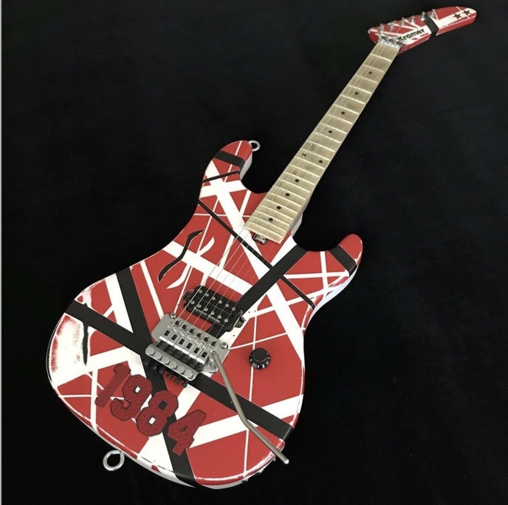
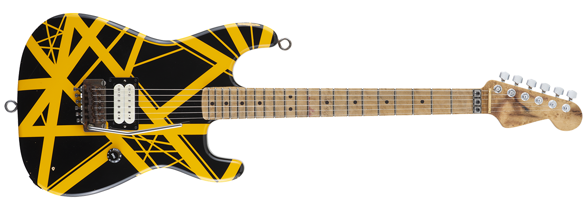

Here we have Eddie's 1984 Kramer (left) and 1979 Bumblebee (right). The Bumblebee was hand built by Eddie and was featured on the cover of Van Halen II! Eddie heavily utilized his Kramer guitars on the Van halen 5150 tour.


In 1990 Eddie signed a deal with Ernie Ball Music Man, leading to the Music Man Eddie VH Signature (left). In 1996, he switced over to Peavey Guitars, leading to the Peavey EVH Wolfgang(right), which was named after his son Wolfgang.